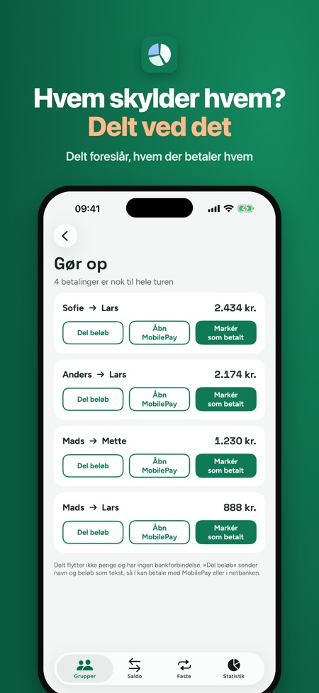
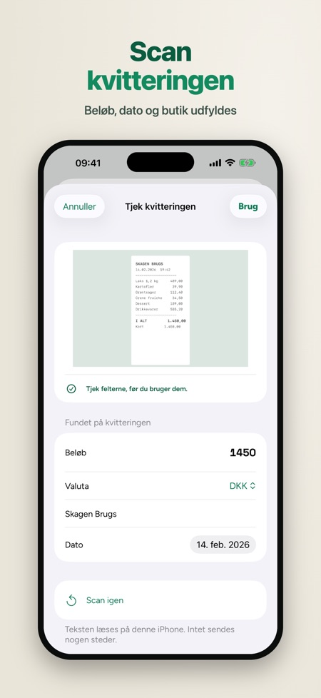
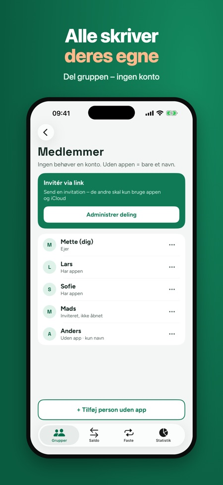

Rejse, sommerhus, bofællesskab. Hvem betalte hvad, og hvem skylder hvem? Skriv udgifterne på turen eller i bofællesskabet, og gør op med så få betalinger som muligt. Uden konto.



Del udgifterne på sommerhusturen, i bofællesskabet eller på rejsen – uden regneark og uden konto. Skriv hvem der betalte hvad, så viser Delt, hvem der skylder hvem, og hvordan I gør op med færrest mulige betalinger.
SÅDAN VIRKER DET
• Opret en gruppe til turen, sommerhuset, bofællesskabet eller festen og tilføj folk. Dem uden appen tilføjes med kun navn.
• Skriv en udgift på få sekunder med tastaturet: beløb, hvem der betalte, og hvem der deler.
• Del ligeligt, efter andele, med præcise beløb eller i procent. Delt tjekker, at summen passer.
• Saldoen viser, hvem der får penge tilbage, og hvem der skylder. Ingen øre forsvinder – saldoen går altid op, ens på alle telefoner.
• Gør op: Delt foreslår færrest mulige betalinger (»Lars betaler Mette 620 kr.«). Del beløbet som tekst eller åbn MobilePay, og markér det som betalt.
DEL GRUPPEN VIA ICLOUD
Invitér de andre med et iCloud-link. Dem, der har appen, skriver selv deres udgifter, og ændringerne synkroniseres. Ingen behøver en konto hos os, og der er ingen reklamer: grupperne ligger i din egen iCloud, ikke på vores servere. Virker også uden internet – ændringerne sendes, når du er online igen. Hver udgift har historik, så alle kan se, hvem der ændrede hvad.
DELT PLUS (ENGANGSKØB)
• Scan kvitteringen: beløb, dato og butik udfyldes, og billedet gemmes på udgiften (de tre første scanninger er med uden køb)
• Flere valutaer med en kurs, du selv skriver
• Faste udgifter til bofællesskabet: husleje, el og internet tilføjes hver måned (én fast udgift er med uden køb)
• Statistik pr. kategori og pr. person, eksport til regneark (CSV) og PDF
Grupper, udgifter, saldo, afregning og billedet af saldoen kan bruges uden køb – ingen grænse pr. dag.
Delt flytter ikke penge og har ingen bankforbindelse. Betalingen klarer I selv, for eksempel med MobilePay eller i netbanken.
Sprog: dansk, norsk, finsk og engelsk.